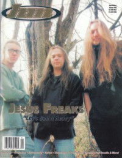

CMnexus
:
Contemporary Christian culture, music, and media.
Magazines
Profiles
Dove Awards
cmnexus.org
CM
nexus
→
Profiles
→
M
→
Brian Vincent McGovern
Brian Vincent McGovern
Writing Credits: 2 of 9
< -- Previous
Next -- >
1
2
3
4
5
6
7
8
9
Writing credits listing
Dec 1995 in
HM
#56
Spy Glass Blue
-
7"
My Cat Puddin' Head
-
My Cat Puddin' Head
Thre3
-
Thre3
Thryce Denied
-
Modern Day Magdalene
Thresh
-
demo
New Society
-
Evil Age
Feb 1996 in
HM
#57
"Free At Last to do a nu thang (...like rock & roll)"
dc Talk
Common Children
Concert Review:
MxPx
Concert Review:
PFR
MxPx
-
On the Cover
Dighayzoose
-
Ascension 7: Rocketship to Heaven
Leaderdogs for the Blind
-
Lemonade
The Cloud Merchants
-
Salt
Brian White and Justice
-
The Least That I Can Do
Bride
-
Shotgun Wedding...11 #1 Hits & Mrs.
Faze
-
Just Tryin' Ta Stay Up
Third Day (UK)
-
demo
Heartfelt
-
demo
Situation Taboo
-
Injecto Logos
Grievance Hour
-
demo

Apr 1996 in
HM
#58
Jesus Freaks
Metanoia
Plankeye
"Finding A Footstool"
Waterstain
Unashamed
-
Reflection
Dogs of Peace
-
Speak
Rob Walker
-
Strobe
Mortal
-
Pura
The Newsboys
-
Take Me to Your Leader
Dale Thompson
-
Dale Thompson and the Religious Overtones
Rocketboy
-
No Sign of Intelligent Life
Ockham's Razor
-
Ockham's Razor
Painted By Moses
-
EP
Possession
-
Eternally Haunt
Thre3
-
Ultra Violet Waves
Bones of Adam
-
demo
Cleanser
-
4-song demo
Directed Youth
-
demo
-
Grace Thirsty Souls
-
The Way I Am
Indomitus
-
4-song demo
Missionary One
-
8-track tape
Mr. Crazy
-
Our Cry
Modus Operandi
-
demo
Sum 1996 in
HM
#59
The Newsboys
Fourth Estate
Brian White and Justice
King's X
-
Ear Candy
Stavesacre
-
Friction
Writing Credits: 2 of 9
< -- Previous
Next -- >
1
2
3
4
5
6
7
8
9
CMnexus
(noun)
The magazine index
of modern music
and Christianity
© 2011 CMnexus. Last updated May 2025.
Contact:
Rants and other correspondence to:
editor -AT- cmnexus
-DØT- org
About